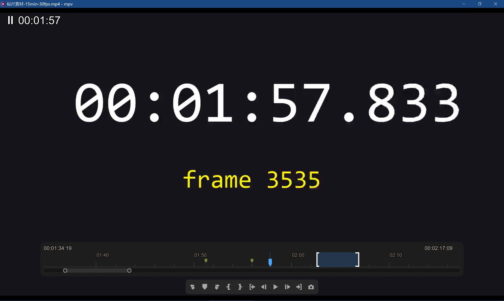
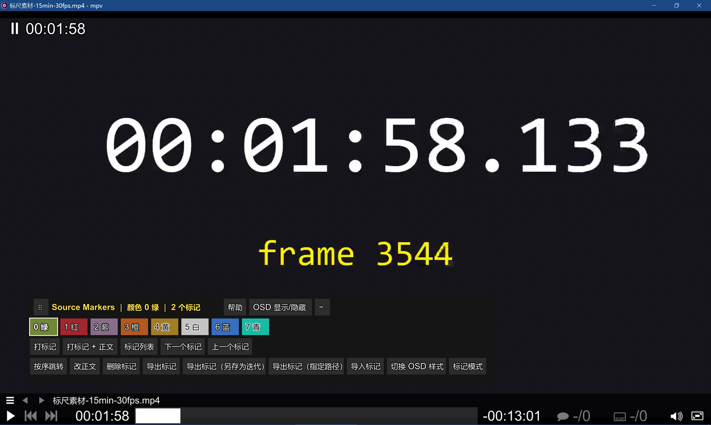
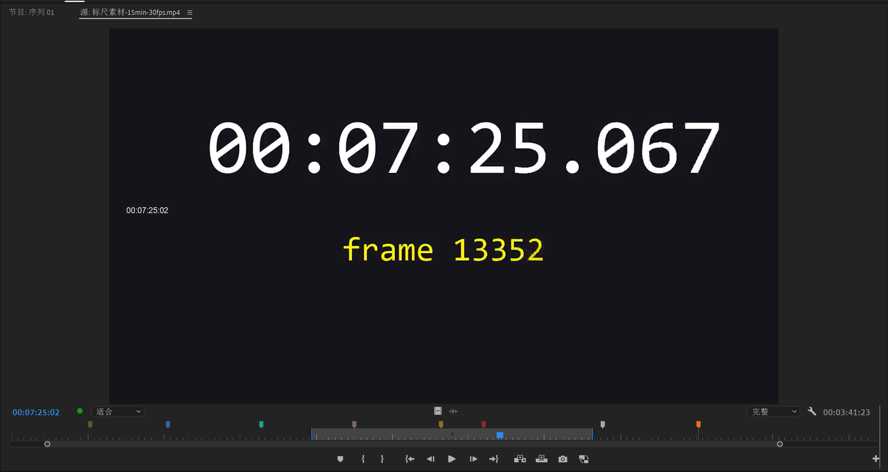

鼠标移到图上虚框处看说明。
橙虚框＝容器级
蓝实框＝具体元素
绿实框＝段与度量（横轴 / 轨道 / 环心距）
· 完整文字版见 docs\术语标准-元素与操作.md

点一下横轴它会变白并跟随鼠标平移 —— 这个状态叫激活，再点一下放下回到非激活。
这张图里看不到 按钮面板（F2 浮窗），见第二个页签。
层级：轨道（全长槽，固定）⊃ 概览条（滑块 ⚪====⚪，宽 = 环心距）⊃｛横轴 ＋ 环 ×2｝。就像滑块：槽不动，滑块在里面跑。

这是 样式 = panel（按钮面板，UI.style='panel'），F2 开关；
与 控制栏（UI.style='prbar'）互斥显示。

Pr 的概览条（最底下那条滑块）控制的正是可见范围，与 mpv 同构。 上面那条灰带才是中括号（出入点）。
| 正式名 | 指什么 | 代码 | 别再叫成 |
|---|---|---|---|
| 激活 | 横轴被抓起后的状态：变白、跟随鼠标平移，再点一下放下 | — | 选中、按下、抓起、激活段 |
| 非激活 | 横轴的默认状态（不变白、不跟随鼠标） | — | 未选中、松开 |
| 单动 | 拖环时只动被抓的那一端，另一端钉住 | tl_grab_feel='mouse' | 单端拖动、独立拖动 |
| 同动 | 两环以播放头为轴对称缩放 | gr.sym | 双动、联动、对称缩放 |
| 转嫁 | 单动的方向会让播放头远离中点时，改抓另一端 | illegal / gr.trans | 换手、翻转、镜像 |
| 钉住 | 决定「另一端」按像素不动还是按时间不动 | tl_ov_pin='px'|'time' | 锁定、固定 |
| 贴边 | 可见范围碰到片头 / 片尾 | tl_ov_edge='pin'|'pr' | 到边、触界、撞墙 |
| 缩放锚点 | 滚轮缩放时播放头落在哪里 | tl_zoom_anchor | 锚点、基准点 |
| 最小跨度 | 时间轴最多能放大到多少帧 | tl_min_frames（默认 40 f） | 最小宽度、最小可视区间 |
| 播放跟随 | 播放/暂停时可见范围要不要跟着播放头走 | tl_play_follow='pr' | 自动跟随、滚动跟随 |
| 正式名 | 指什么 | 代码 | 别再叫成 |
|---|---|---|---|
| 控制栏 | Pr 风格的传输控制条 | UI.bar / prbar_metrics() | 工具栏、按钮条、底栏 |
| 按钮面板 | 第 8 条之前的浮窗按钮集（F2 开关，与控制栏共存但互斥显示） | UI.panel | 面板、浮窗、F2 面板 |
| 样式 | 二选一：prbar（控制栏）或 panel（按钮面板） | UI.style | 模式、外观 |
| 正式名 | 指什么 | 代码 | 别再叫成 |
|---|---|---|---|
| 标记 | 时间点上的一条记录（时间 + 颜色 + 备注） | S.marks | 书签、点位、chapter |
| 颜色号 | 标记颜色的 0..7 索引（绿红紫橙黄白蓝青） | color | 色号、颜色索引 |
| sidecar | 与视频同名的 .mpv-autosave.json 自动保存文件 | o.sidecar | 存档、缓存文件 |
| 导出文件 | 用户主动导出的 JSON / CSV | — | 输出文件、报告 |
| 废弃 | 改成 | 原因 |
|---|---|---|
| 亮段 | 横轴 | 2026-10-31 统一。「激活」是抓取状态，不是空间分段，别写成「激活段 / 非激活段」 |
| 可视范围 / 可视区间 / 可见区间 | 可见范围 | 2026-10-28 全仓统一（91 处 / 16 个 .md） |
| 出入点区间 | 看语境：时间轴两端时间码说的是可见范围；中括号说的是出入点 | 曾把两个独立实体叫成一个，导致「goto 不平移」被误判成「控件语义不同」 |
| 区间（单独出现） | 写明是可见范围、出入点还是拖动区间 | 「区间」在旧文档里同时指三件事 |